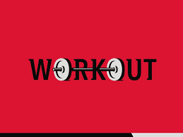

☰ open
WORKOUT

Workout, also known as exercise or physical activity, can be a great hobby for people of all ages and fitness levels. Engaging in regular physical activity has been shown to have numerous benefits for both physical and mental health, including improved cardiovascular health, increased muscle strength and endurance, reduced risk of chronic diseases such as diabetes and obesity, and improved mood and cognitive function.
There are many different types of workouts that can be enjoyed as a hobby, including cardio exercises such as running, cycling, or swimming, strength training with weights or resistance bands, and activities such as yoga or Pilates that focus on flexibility and mindfulness.
WATCHING ANIME

Anime is a popular form of entertainment that originated in Japan and has since spread to all corners of the world. It is a unique form of animation that often features complex storylines, vivid characters, and stunning visuals.
As someone who enjoys anime as a hobby, you likely have a deep appreciation for this art form. Anime has become increasingly popular in recent years, with new series and movies being released regularly. Some of the most beloved anime series include Naruto, Attack on Titan, One Piece, and Fullmetal Alchemist, to name just a few.
One of the great things about anime is that it covers a wide range of genres, from action and adventure to romance and comedy. There is truly something for everyone, whether you're looking for a thrilling, action-packed story or a heartwarming romance.
TAEKWONDO
Taekwondo is a martial art that originated in Korea and has since become a popular sport and fitness activity around the world. As someone who enjoys taekwondo as a hobby, you likely have a deep appreciation for the discipline, focus, and physicality that it requires.
One of the great things about taekwondo is that it is a versatile activity that can be enjoyed by people of all ages and skill levels. Whether you are a beginner or an experienced practitioner, there is always room for growth and improvement in taekwondo.
Taekwondo is not just a physical activity, it is also a mental and spiritual one. Practicing taekwondo can help improve your focus, discipline, and self-confidence, while also promoting a sense of calm and inner peace.